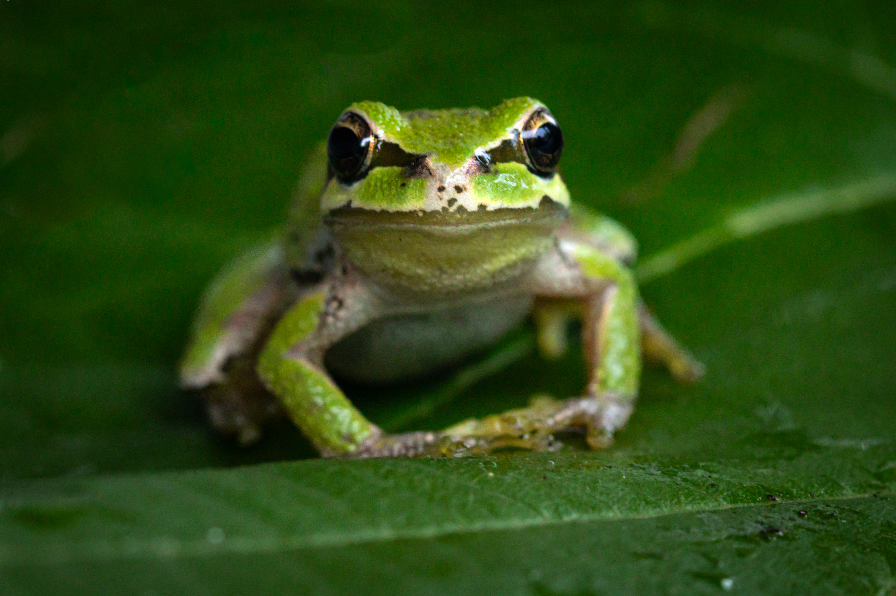
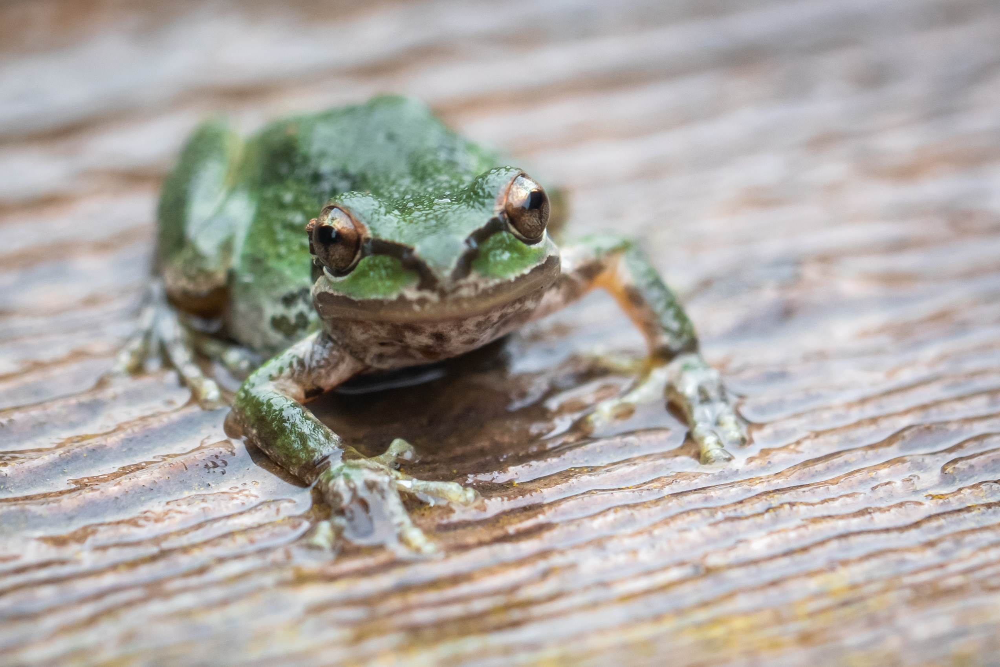
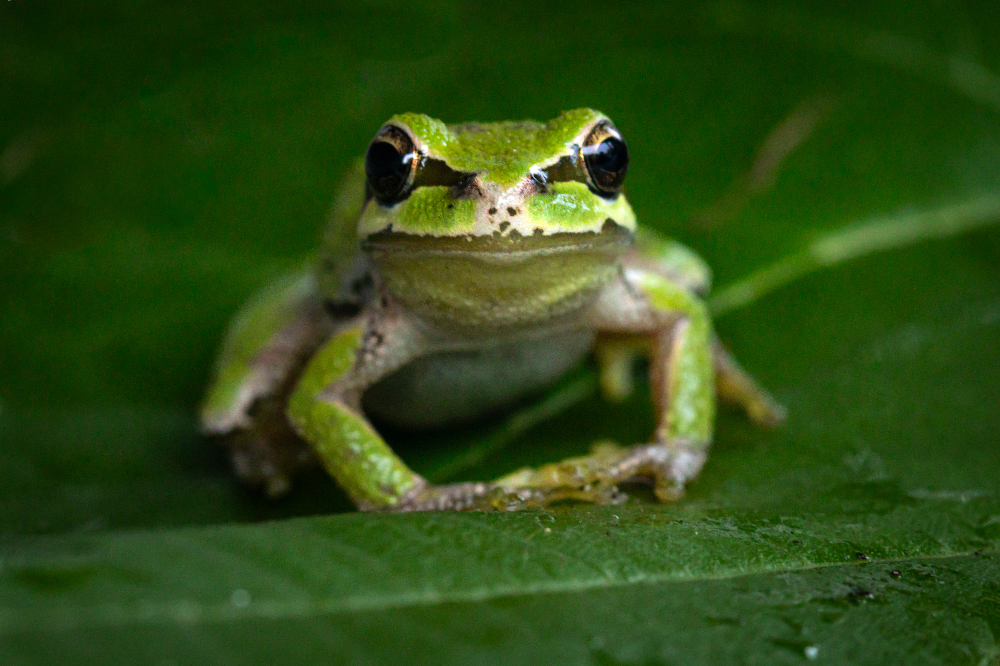
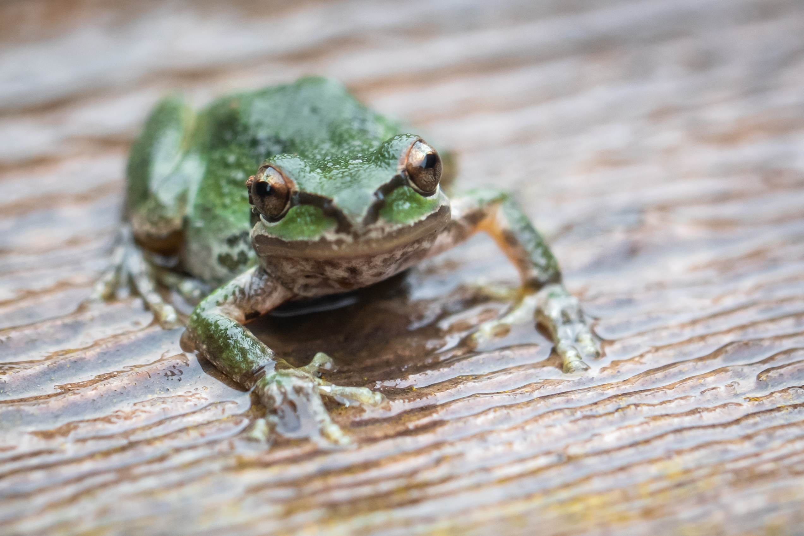
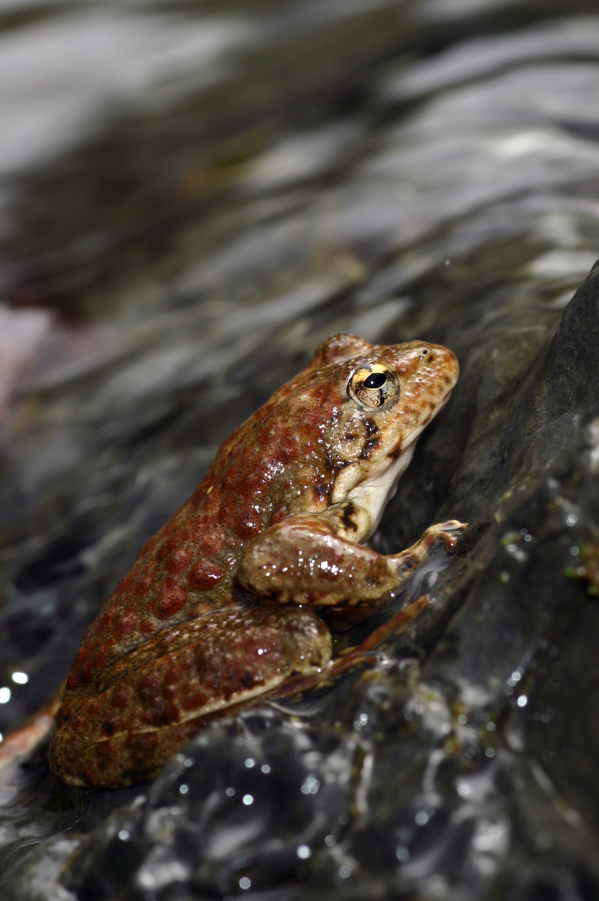
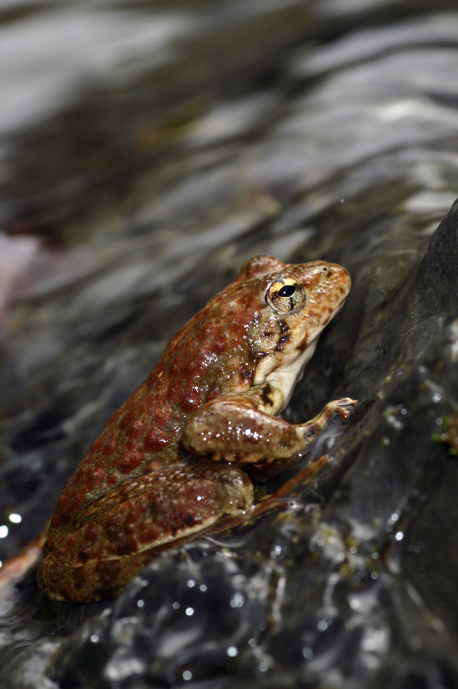

California Red-legged Frog
Conservation Status
Status: Threatened. Conservation efforts are focused on habitat protection and restoration.
Source: U.S. Fish & Wildlife Service
The California Red-legged Frog, known for its distinctive red underside and powerful legs, is a true icon of the Western United States. Thriving in wetlands and streams, its diet primarily consists of insects and worms. This species holds a special place in American literature, having inspired Mark Twain's famed story "The Celebrated Jumping Frog of Calaveras County." Once abundant, these frogs have faced challenges due to habitat loss but remain a symbol of California's diverse wildlife. Their remarkable leaping ability and unique coloration make them a fascinating subject for nature enthusiasts. Source: California Herps.
Jennings' 1995 study highlights the impact of urban development on the Red-legged Frog's habitat in California, demonstrating the species' vulnerability to human-induced changes in the environment. Source: Jennings (1995)
Sounds - SD Natural History Museum on YT
Foothill Yellow-legged Frog
Conservation Status
Status: Species of Special Concern in California. Populations are affected by river management and habitat alterations.
The Foothill Yellow-legged Frog, predominantly found in California's streams and rivers, is an intriguing amphibian. It primarily feeds on insects and plays a vital role in the riverine ecosystem. This species is particularly known for its sensitivity to changes in water flow and quality, making it an indicator of environmental health. The breeding of the Foothill Yellow-legged Frog is closely tied to seasonal rains, showcasing their unique adaptation to local climatic conditions. Conservation efforts are crucial for this species, as alterations to their natural habitats pose significant threats to their populations. Source: California Herps.
Sounds - oakconnor on YT
Sierra Nevada Yellow-legged Frog
Conservation Status
Status: Endangered. Threatened by habitat loss, disease, and environmental changes.
Source: amphibiaweb.org
The Sierra Nevada Yellow-legged Frog, a high-altitude dweller in California's mountain lakes, has garnered attention for its endangered status. These frogs primarily consume insects and have evolved unique breeding cycles adapted to their alpine environments. Once prevalent across the Sierra Nevada, they have faced significant challenges due to habitat loss and disease. Conservation efforts are increasingly important for this species, highlighting the need for environmental stewardship. Their story is a compelling example of how even seemingly remote species are impacted by broader ecological changes. Source: Gone Froggin.
Sounds - DiscoverX on YT
Arroyo Toad
Conservation Status
Status: Endangered. Threatened by habitat loss, disease, and environmental changes.
Source: IUCN Red List
The Arroyo Toad, a nocturnal species, is most commonly found in California's coastal streams. These toads are known for their unique sand-burrowing behavior, which they use as a daytime refuge. Their diet consists mainly of insects, and they play an important role in controlling insect populations in their habitats. The Arroyo Toad has a distinctive life cycle and reproductive pattern, relying on the sandy and gravelly banks of streams for breeding. Their existence highlights the delicate balance in aquatic ecosystems and the importance of preserving natural stream environments. Source: SnakeTracks.com.
Sounds - Sam Stewart on YT
Pacific Tree Frog
Conservation Status
Status: Least Concern. This species is adaptable and widely distributed.
Source: IUCN Red List
The Pacific Tree Frog, known for its versatility, inhabits a range of environments including forests, grasslands, and urban areas. This small but vocal amphibian's diet consists of insects and spiders, contributing to insect population control. A remarkable feature of the Pacific Tree Frog is its ability to change skin color, aiding in camouflage. During mating season, their loud chorus calls are a familiar sound in wetlands, signaling their presence. This adaptability to various habitats and conditions showcases the frog's resilience and the importance of preserving diverse ecosystems for species survival. Source: National Park Service.
A study by Brattstrom and Warren (1955) reveals that the Pacific Treefrog's mating calls vary with temperature, reflecting its adaptability to environmental changes. Source: Brattstrom and Warren (1955).
Sounds - Greg Schechter on YT 



 
